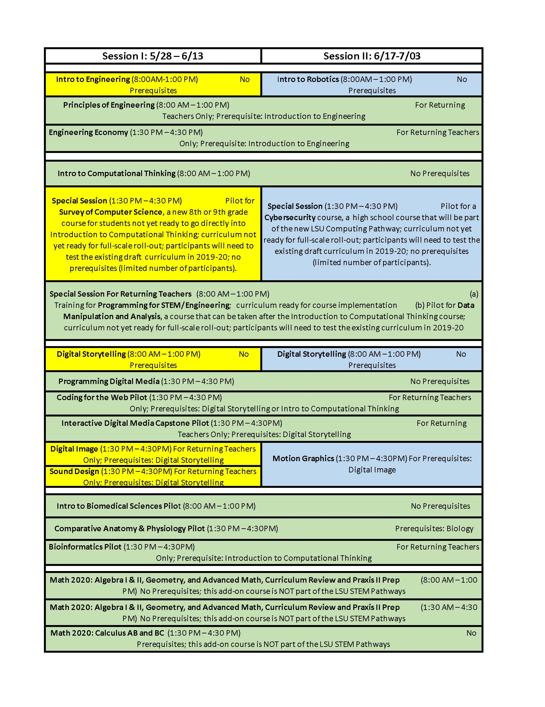

We are seeking motivated and engaged high school teachers1 who are interested in facilitating LSU STEM Certification Pathway courses in Pre-Engineering, Digital Design & Emergent Media, Computing, or Biomedical Sciences in the 2019-20 school year. Participants do not need to have any background knowledge or prior training in Engineering, Digital Design, Computer Science, or Biomedical Sciences.
For a school to be able to offer courses within the LSU Certification Pathway framework, teachers must become certified to teach a specific course at the LSU Pathways Summer Training Institute at Lee Magnet High School in Baton Rouge. Some courses require teachers to participate in a 3-week training institute (yellow and blue cells below, 12 days); some courses require a 6-week training institute (green cells below; 24 days). The three week training institutes are from 5/28 - 6/13 and from 6/17 to 7/03; the six week institute is from 5/28 to 7/03.
The registration fee for a three-week institute is $1,920 per teacher, for a six-week institute it is $3,940 per teacher. Should a participant want to receive graduate credit for the summer institute (most courses are eligible for graduate credit), the teacher must enroll in the LSU Graduate School and additional LSU fees apply (please contact Dr. Frank Neubrander at fneubr1[at]lsu.edu if you are interested). A teacher can earn 3 hours of graduate credit for a three week institute ($434 in fees to be paid; $1,007 tuition will be covered through the registration fee). A teacher can earn 6 hours of credit when participating in the six week institute ($1,086.20 in fees to be paid; $2201.80 tuition will be covered through the registration fee). If a teacher needs a dorm room on the LSU campus, the additional charges will be about $700 for a three week institute and $1,400 for a six-week institute. Stipends for teachers will be determined and paid for by the school districts.
During the 2019-20 school year, participants also need to attend ten Saturday sessions (8am-noon) that are designed to assist with course implementation issues (participants who cannot travel to LSU will be able to participate virtually). There will be no charge for the Saturday sessions; stipends for teachers will be determined and paid for by the school districts.
Students taking LSU STEM Pathway courses with a trained teacher will be eligible to earn LSU STEM Pathway Certificates and the school district will receive $476 per student per course from the Louisiana Department of Education’s Career and Technical Education JumpStart funds. A school does not have to commit to implement all of the Pathway courses; as long as any one Pathway course is taught by a trained teacher, the school district will receive $476 in JumpStart funding for each participating student receiving a LSU Certification of Course Completion.
For a high school teacher to be able to participate, his/her high school must sign a Memorandum of Understanding (MoU) with LSU in which the school commits to2
To apply, please register at [add link to form here] lsupathways.org asap (seats are limited) and latest by April 15th, 2019. You will then receive an email confirming your registration and will be asked to send a resume and a cover letter with your name, email, cell phone, the course(s) you will be taking, request for accommodations, and whether or not you are interested in taking the courses for graduate credit.3 Also, you will be asked to return a brief letter of commitment from your school expressing its willingness to negotiate a MoU with LSU that specifies the terms under which the school can offer these Pathway courses and receive $476 in JumpStart funding per student per Pathway course.
If you have questions about the Pathway program in general, please send them to Dr. Frank Neubrander at neubrand@math.lsu.edu . He will answer within 24 hours.
1 Middle school teachers who are interested in participating in a middle school Pre-Engineering and Computational Thinking pilot program this summer are encouraged to send their inquiries to Frank Neubrander ar neubrand@math.lsu.edu. Also, middle school teachers interested in bringing Computer Science to their schools may contact CSforAll@cct.lsu.edu . 2 The MoU might cover other things but, basically, it is the required contract between LSU and your school that specifies the terms under which the school can offer these Pathway courses and qualify for $480 in JumpStart funding for each Pathway student receiving a Certificate of Course Completion from LSU. 3 Participants interested in receiving graduate credit will have to provide further information when applying to the LSU Graduate School. Also, for a limited number of participants we can provide funding to help with accommodation at LSU for the duration of the Summer Institute. These issues will be discussed on an individual basis. For specific questions about graduate credit and additional financial support to help with tuition, fees, and/or accommodation during the Summer Institute, please contact Dr. Frank Neubrander at neubrand@math.lsu.edu .